NN Playground · Arbeitsblatt 1
Erkennt ein Netz ein Lächeln?
Erstkontakt mit NNPlayground und dem Projekt «smileys»
Das kannst du nach diesem Arbeitsblatt
- Training samples und test samples unterscheiden.
- Ein Bild als 40 × 40 input-Werte zwischen 0 und 1 beschreiben.
- Input, hidden layer, output / prediction, target, error und weights in der network visualisation zuordnen.
- Zeigen, dass training die Gewichte (weights) und damit die Vorhersagen (predictions) verändert.
- Erklären, wieso gute Performance mit den training samples noch nicht bedeutet, dass das Netz die eigentliche Aufgabe gelernt hat.
Startklar
Öffne die App: https://nicolasruh.github.io/nnplayground/
Arbeite ggf. zu zweit: Eine Person bedient, die andere protokolliert. Wechselt ab und zu die Rollen.
Die Namen bleiben auf diesem Gerät und erscheinen nur in der Sicherungsdatei und im Ausdruck.
Sechs Begriffe für heute
| Begriff in der App | Arbeitsdefinition |
|---|---|
| sample | ein Beispiel aus input-Werten und einem target |
| input | Werte, die in das Netz hineingehen; hier 1600 Pixelwerte |
| target | gewünschter Sollwert (target) eines Beispiels |
| output / prediction | aktuelle Vorhersage (prediction) des Netzes zwischen 0 und 1 |
| weights | Zahlen an den Verbindungen; sie bestimmen die Weitergabe von Aktivierungen (activations) im Netz |
| training / testing | weights verändern / predictions nur auswerten |
Kapitel 1 · ca. 10–15 min
1Projekt laden und Oberfläche lesen
Wähle unter Projects das Projekt «smileys». Die Auswahl lädt das Projekt direkt.
Warte, bis network architecture, weights und data gefüllt sind. Das Laden des Projekts kann bei vielen data-Einträgen oder weights kurz dauern.
Orientiere dich in der Oberfläche der App und finde die sechs Bereiche: projects · network architecture · weights · data · training/testing · network visualisation
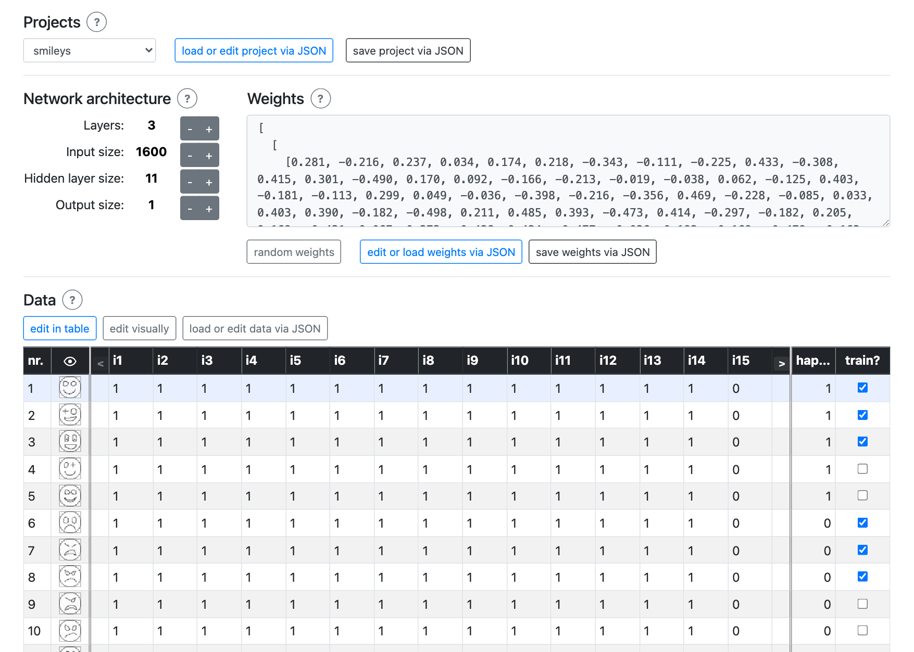
aWelche Netzwerkarchitektur (network architecture) hat das geladene Netz?
Musterlösung
Das Netz besitzt 1600 input-Neuronen, 11 Neuronen im hidden layer und 1 output-Neuron. Zusätzlich gibt es nach der input- und der hidden-Schicht je ein bias-Neuron-Neuron. In der Anzeige steht daher: 1600 + 1 / 11 + 1 / 1.
bWie viele Gewichte (weights) hat dieses Netz?
Musterlösung
Zwischen input layer und hidden layer liegen (1600 + 1) × 11 = 17 611 weights.
Zwischen hidden layer und output liegen (11 + 1) × 1 = 12 weights.
Insgesamt sind es 17 623 weights.
cZähle in der data-Tabelle:
Musterlösung
Die data-Tabelle enthält 11 samples: 6 training samples und 5 test samples.
dDie target-Spalte ist überschrieben mit «happy?»: Was könnten die Werte 1 und 0 bedeuten?
Musterlösung
Der target-Wert 1 steht für ein glückliches Gesicht, der target-Wert 0 für ein nicht glückliches beziehungsweise trauriges Gesicht.
Kapitel 2 · ca. 10 min
2Beispiele sind Pixelwerte
Ein Smiley wirkt wie ein Bild. Für das Netz ist er jedoch eine Matrix aus Zahlen: 40 × 40 = 1600 input-Werte. In dieser Darstellung gilt 0 = schwarz, 1 = weiss; Graustufen liegen dazwischen.
Diese Zahlen bilden die inputs der verschiedenen Beispiele (samples) und werden in der Tabelle unter data angezeigt. Du kannst sie hier sogar ändern (edit in table), das ist aber bei so vielen Zahlen sehr unübersichtlich. Daher gibt es noch einen weiteren Modus: Mit edit visually (oder einem Klick auf das Auge-Symbol oder ein kleines Smiley) kannst du die Zahlen als Pixel darstellen und auch verändern.
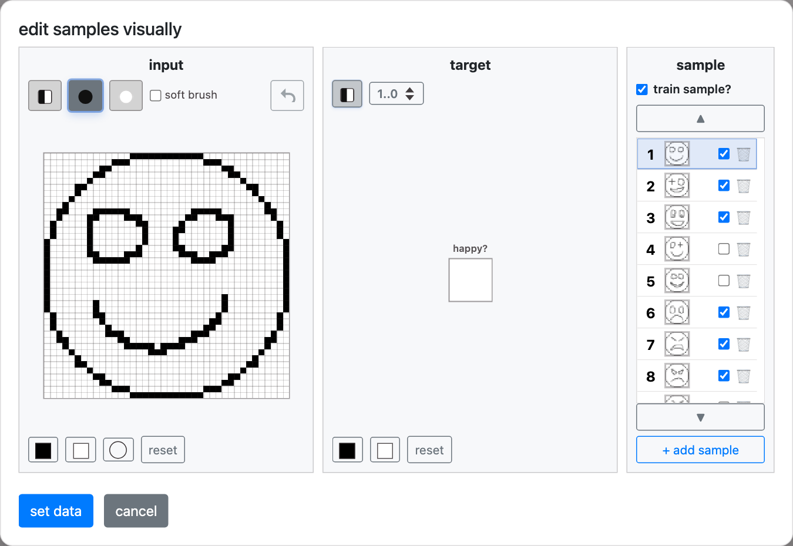
Experimentiere ein bisschen mit den Möglichkeiten zur Anpassung von Daten. Finde heraus:
aWelchen Wert hat der 20. input im ersten sample?
Musterlösung
Der 20. input-Wert des ersten samples ist 0.
bWie macht man das Pixel ganz oben links schwarz?
Musterlösung
Man setzt den input-Wert i1 auf 0. Dadurch wird das Pixel oben links schwarz.
cWie macht man im zweiten sample das letzte Pixel in der obersten Zeile grau?
Musterlösung
Man setzt i40 ungefähr auf 0.5. Dadurch erscheint das letzte Pixel der obersten Zeile grau.
dErkläre in einem Satz: Warum braucht das Netz für ein 40 × 40-Bild genau 1600 inputs?
Musterlösung
Das Bild besitzt 40 × 40 = 1600 Pixel. Jedes Pixel wird durch genau einen Zahlenwert beschrieben und liefert deshalb genau einen input-Wert.
Darauf kommt es an – hake ab, was bei dir vorkommt:
Erstelle ein neues sample. Zeichne ein glückliches Gesicht und lege dementsprechend als target den Wert 1 fest (train sample? nicht anklicken). Speichere mit set data.
Klicke in der Datentabelle auf das neue sample – wie beurteilt das Netz das neue Beispiel?
Beispiel – dein Ergebnis darf abweichen
Mögliche Beobachtung: Der output beträgt etwa 0.28. Das Netz beurteilt den selbst gezeichneten Smiley damit eher als nicht glücklich. Bei einer anderen Zeichnung kann der output deutlich abweichen.
Kapitel 3 · ca. 15 min
3Samples durch das Netz schicken
Im Folgenden wollen wir wieder mit den unveränderten Daten arbeiten. Nimm also die Änderungen in data zurück oder lade das «smileys»-Projekt noch einmal neu.
Also: inputs sind Zahlen, targets sind Zahlen, weights auch – wie passt das alles zusammen? Genau das zeigt der Bereich network visualisation:
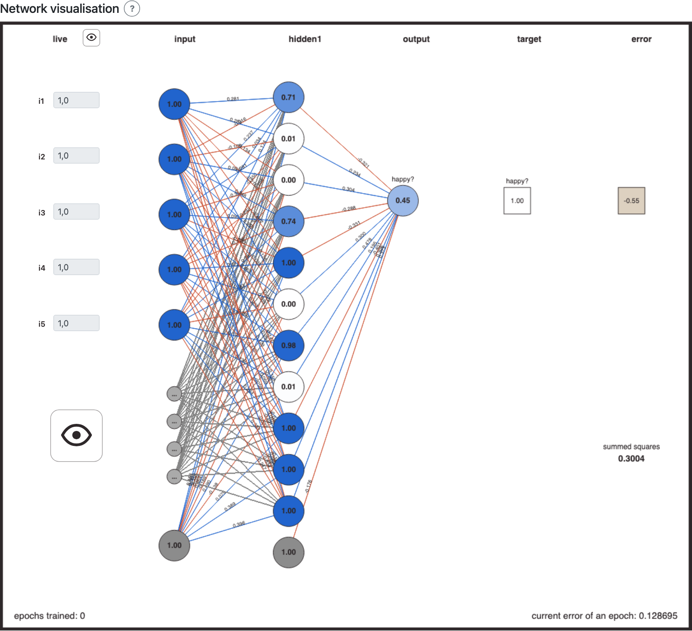
Mit einem Klick in die Datentabelle legst du fest, welches sample gerade in der network visualisation dargestellt wird. Die input-Werte werden in die Eingangsschicht (input layer) kopiert, dann per Multiplikation mit den Gewichten (weights) an die Zwischenschicht (hidden layer) weitergegeben und von dort über weitere weights in einen output umgewandelt. Blaue Linien sind positive, rote negative weights; dünnere Striche stehen für kleinere Werte. Bei grossen Netzen werden nicht alle Werte gezeigt. Einzelheiten siehst du per Tooltip.
Ein solcher Vorwärtsdurchlauf heisst forward propagation. Den resultierenden output (prediction) kann man mit dem Sollwert (target) vergleichen. Die Differenz output − target = error soll beim training möglichst nahe bei 0 liegen.
Begriffe bezogen auf die Visualisierung (network visualisation)
| Element | So liest du es heute |
|---|---|
| input | 1600 Pixelneuronen, nur die ersten 5 werden ganz gezeigt; Punkte stehen für ausgelassene inputs |
| hidden1 | 11 Neuronen der (einzigen) Zwischenschicht (hidden layer); stärkere blaue Füllung = höhere Aktivierung (activation), s. numerischer Wert (Tooltip) |
| output happy? | Vorhersage (prediction) zwischen 0 und 1 |
| blaue / rote Linien | positive / negative weights; die Dicke zeigt grob die Stärke, s. numerischer Wert (Tooltip) |
| target / error | Sollwert (target) / Abweichung zwischen output und target: output − target |
Klicke in data auf ein sample. Dadurch läuft die forward propagation: input-Werte werden Schicht für Schicht bis zum output weitergegeben.
Was ändert sich beim Wechsel des samples? Was bleibt unverändert?
Musterlösung
Beim Wechsel des samples ändern sich die input-Werte, die Aktivierungen im hidden layer, der output sowie target und error. Unverändert bleiben die Netzwerkarchitektur und die weights, weil beim testing keine Gewichte angepasst werden.
Darauf kommt es an – hake ab, was bei dir vorkommt:
Klicke nacheinander auf die Zeilen 1, 6 und 11 der data-Tabelle. Auf diese Weise kannst du überprüfen, wie gut das aktuell geladene Netz funktioniert (performance). Trage ein:
| sample no | output | target | error |
|---|---|---|---|
| 1 | |||
| 6 | |||
| 11 |
Musterlösung
Für das geladene, vortrainierte Projekt ergeben sich die folgenden Werte (error = output − target):
| sample no | output | target | error |
|---|---|---|---|
| 1 | 0.99 | 1 | −0.01 |
| 6 | 0.02 | 0 | 0.02 |
| 11 | 0.14 | 0.5 | −0.36 |
Du kannst das aktuell verarbeitete sample auch live anpassen. Wähle ein glückliches Smiley in der Datentabelle, klicke dann auf das Auge in der linken Spalte der network visualisation. Was geschieht, wenn dieser Input durch das Netz geschickt wird, siehst du in der visualisation - auch, wenn du jetzt "live" Pixel veränderst.
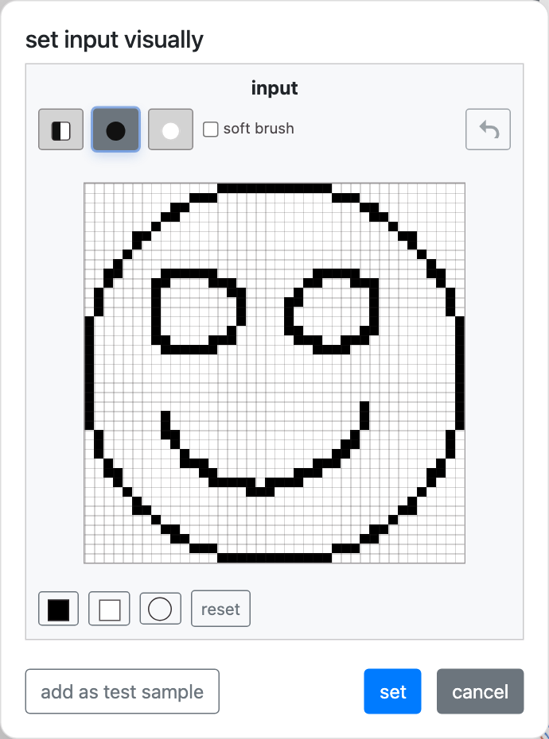
aWie beurteilt das Netz das gewählte sample?
Beispiel – dein Ergebnis darf abweichen
Beispiel mit sample 3: Der output liegt bei 0.99. Das Netz beurteilt diesen Smiley daher mit hoher Sicherheit als glücklich.
bÄndere die Pixel des glücklichen Smileys, bis das Netz es für unglücklich hält.
Beispiel – dein Ergebnis darf abweichen
Diese mögliche Veränderung senkt den output auf 0.26. Andere Zeichnungen können zu anderen Werten führen; der Screenshot zeigt nur ein Beispiel.
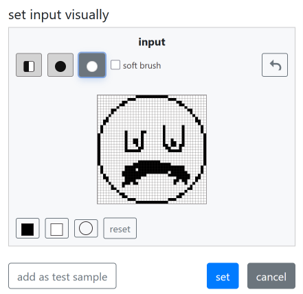
cWieso führen diese neuen Pixel jetzt zu einem sehr kleinen output?
Musterlösung
Durch die veränderten Pixel ändern sich mehrere input-Werte. Diese werden mit den gelernten weights gewichtet und erzeugen dadurch andere Aktivierungen im hidden layer. In diesem Beispiel fehlen Merkmale, die das Netz mit einem glücklichen Gesicht verbindet, oder es kommen Merkmale hinzu, die den output senken. Entscheidend ist also nicht nur die Anzahl schwarzer Pixel, sondern auch ihre Position und Gewichtung.
Darauf kommt es an – hake ab, was bei dir vorkommt:
Kapitel 4 · ca. 10 min
4Training
Das zu Beginn geladene Smileys-Projekt war bereits trainiert, so erklärt sich seine oft korrekte Beurteilung der Pixelwerte (performance, s. Aufgabe 7). Jetzt wollen wir von vorn beginnen:
Klicke im Bereich weights auf random weights. Du kannst stattdessen auch den roten Knopf Reset verwenden. Beides ersetzt den gesamten Satz von weights durch neue Zufallswerte.
Wähle wieder einzelne samples in der Tabelle und notiere die Ergebnisse:
| sample no | output | target | error |
|---|---|---|---|
| 1 | |||
| 6 | |||
| 11 |
Beispiel – dein Ergebnis darf abweichen
Ein möglicher Durchlauf nach random weights liefert die folgenden Werte. Wegen der Zufallsgewichte sind andere Resultate ebenso korrekt:
| sample no | output | target | error |
|---|---|---|---|
| 1 | 0.30 | 1 | −0.70 |
| 6 | 0.31 | 0 | 0.31 |
| 11 | 0.27 | 0.5 | −0.23 |
Vergleiche output und error mit vorhin (Aufgabe 7).
Beschreibe die Unterschiede und versuche dich an einer Erklärung: Was hat sich (als einziges) geändert, und wie erklärt das die neue, deutlich schlechtere performance?
Musterlösung
Die inputs und targets sind gleich geblieben. Geändert wurden nur die zufälligen weights. Dadurch entstehen andere Aktivierungen, outputs und errors; die performance ist deutlich schlechter, weil die neuen weights noch nicht an den Beispielen trainiert wurden.
Darauf kommt es an – hake ab, was bei dir vorkommt:
Jetzt wollen wir die performance wieder verbessern, dafür muss das Netz trainiert werden.
Training bedeutet, dass ein sample durch das Netz geschickt wird (forward propagation) und dann rückwärts (backpropagation) berechnet wird, welche weights wie angepasst werden müssen, damit der error kleiner wird. Während des Trainings ändern sich also die weights, was den output beeinflusst.
Wähle sample 1 und klicke wiederholt auf train current sample. Beobachte den output.
aWie oft musst du klicken, bis der output grösser wird als 0.85?
Beispiel – dein Ergebnis darf abweichen
In meinem Beispiel waren 24 Klicks nötig, bis der output über 0.85 lag. Die genaue Anzahl hängt von den zufälligen Startgewichten ab.
bWähle jetzt sample 6 (target = 0). Wie hat sich dessen output verändert (vergleiche Aufgabe 10)?
Beispiel – dein Ergebnis darf abweichen
Der output von sample 6 stieg in meinem Beispiel von ungefähr 0.31 auf 0.85, obwohl sein target 0 ist. Das Training mit sample 1 hat gemeinsame weights in Richtung eines höheren outputs verändert und dadurch die Vorhersage für sample 6 verschlechtert.
Eine Epoche (epoch) ist die einmalige Präsentation aller training samples, in zufälliger Reihenfolge.
Ausprobieren: Wie oft musst du auf train 1 epoch klicken, bis der error für sample 1 UND sample 6 kleiner ist als ±0.15? Wird der error in jeder Epoche, für jedes sample kleiner?
Beispiel – dein Ergebnis darf abweichen
Mögliches Ergebnis: In meinem Beispiel wurde in der ersten epoch der error von sample 1 zunächst sogar grösser. Nach 41 Epochen lagen die outputs bei ungefähr 0.86 für sample 1 und 0.15 für sample 6. Die Zahlen variieren. Der error eines einzelnen samples muss nicht in jeder epoch sinken, weil Gewichtsänderungen zugunsten anderer samples dieses Ergebnis vorübergehend verschlechtern können.
Kapitel 5 · ca. 15 min
5Performance beurteilen: error (loss, cost)
Die (sich ändernde) performance des Netzes lässt sich auch systematischer evaluieren: Im Bereich testing kannst du alle training samples durch das Netz schicken und die Resultate anzeigen:
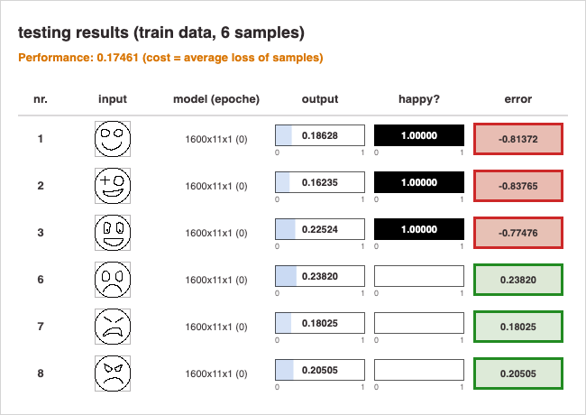
Dieser Test zeigt die performance des aktuellen Netzes für alle training samples. Die Spalte error zeigt den eigentlichen Fehler und, per Rahmenfarbe, eine simple Interpretation der prediction: korrekt/grün, wenn die Abweichung vom target kleiner ist als ±0.5, ansonsten falsch/rot.
In Orange wird oben auch eine Einschätzung der gesamten Leistung (cost) mit diesen samples angezeigt.
Klicke unter testing auf test with train data. Füge einen Screenshot ein:
Beispiel – dein Ergebnis darf abweichen
Beispielergebnis vor dem längeren Training. Die dargestellten outputs und der cost-Wert gehören zu diesem konkreten Durchlauf und dürfen abweichen.
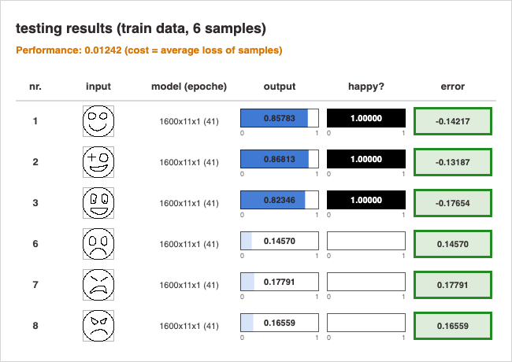
Darauf kommt es an – hake ab, was bei dir vorkommt:
Informiere dich im Erklärtext unterhalb der App über die Unterschiede zwischen den Begriffen error, loss und cost. Du kannst die Begriffe hier anklicken oder direkt im Infotext der App nachlesen.
Erkläre in je einem Satz, was error, loss und cost bedeuten.
Musterlösung
error bezeichnet hier die gerichtete Abweichung zwischen output und target bei einem Beispiel (output − target). loss ist ein nicht negativer Fehlerwert für ein einzelnes sample, beispielsweise der quadrierte error. cost fasst die losses mehrerer samples zusammen; in NNPlayground wird dafür der Durchschnitt verwendet.
Darauf kommt es an – hake ab, was bei dir vorkommt:
Vermutlich werden in deinem Projekt nicht alle training samples korrekt erkannt. Also mehr trainieren:
Lasse learning rate = 0.3, momentum = 0 und epochs = 500. Klicke einfach auf train 500 epochs und warte bis zum Ende. Beobachte, wie sich cost während des Trainings entwickelt.
Beispiel – dein Ergebnis darf abweichen
Im gezeigten Beispiel sinkt cost während des Trainings stark und liegt am Ende ungefähr bei 0.0003. Das zeigt, dass das Netz seine outputs zunehmend an die targets der training samples angepasst hat. Der genaue Kurvenverlauf kann variieren.
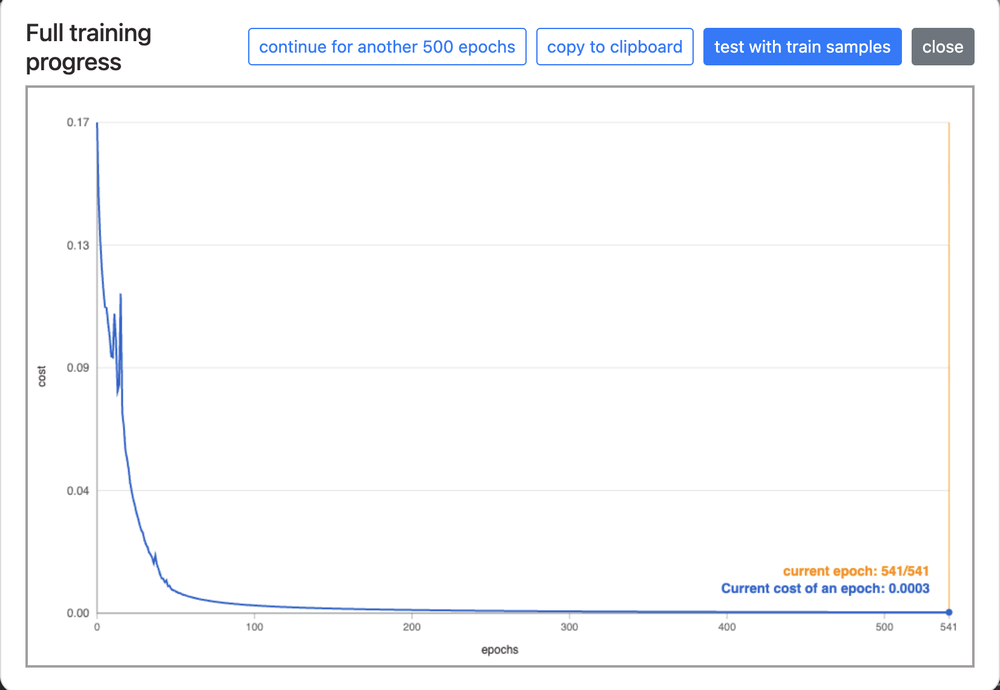
Vermutlich ist cost während des Trainings deutlich gesunken, das Netz hat etwas gelernt. Genauer:
Klicke unter testing auf test with train data. Füge einen Screenshot ein:
Beispiel – dein Ergebnis darf abweichen
Nach dem Training liegen die outputs der sechs training samples nahe bei ihren targets; alle werden nach der einfachen Farblogik der App korrekt beurteilt. Auch dieser Screenshot ist nur ein mögliches Resultat.
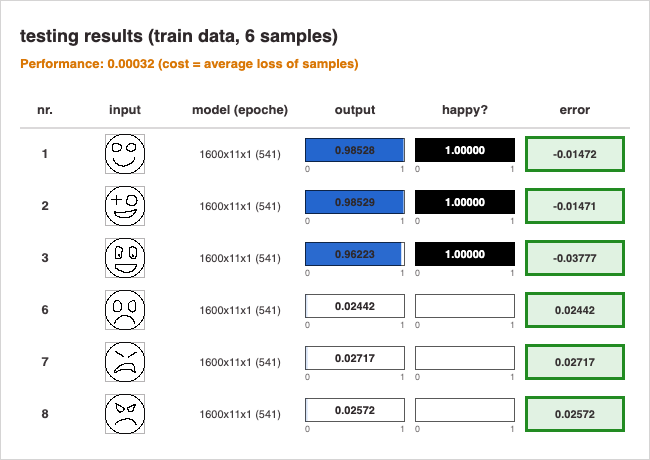
Fasse die Ergebnisse zusammen: a) wie funktioniert das training neuronaler Netze und b) was genau hat dein Netz gelernt?
a
Musterlösung
Beim training wird für ein sample zunächst per forward propagation ein output berechnet. Der Vergleich mit dem target liefert error beziehungsweise loss. Anschliessend wird per backpropagation bestimmt, in welche Richtung die weights verändert werden müssen, damit der loss kleiner wird. Eine epoch verarbeitet alle training samples einmal. Über viele Epochen soll dadurch der gemeinsame cost sinken.
Darauf kommt es an – hake ab, was bei dir vorkommt:
b
Musterlösung
Das Netz hat zunächst vor allem weights gelernt, mit denen es die sechs training samples passend beurteilt. Das beweist noch nicht, dass es die allgemeine Regel «glücklich oder nicht glücklich» gelernt hat. Dafür muss es auch bei unbekannten test samples gute predictions liefern.
Darauf kommt es an – hake ab, was bei dir vorkommt:
Kapitel 6 · ca. 15 min
6Generalisierung
Es ist zu erwarten, dass dieses Netz innerhalb von 500 Epochen training ein Set von weights gefunden hat, das mit den training samples nur minimale Abweichungen zwischen prediction und target zeigt. Aber darum geht es nur indirekt: Die training samples sind gedacht als (hier nur 6) Beispiele für eine allgemeinere Aufgabe (hier: glückliche Smileys von unglücklichen unterscheiden). Um zu beurteilen, inwiefern das Netz die allgemeine Aufgabe lösen kann (Generalisierung), testen wir es mit weiteren Beispielen, die während des Trainings nicht verarbeitet wurden (test samples).
Klicke unter testing auf test with test data.
aFüge einen Screenshot ein:
Beispiel – dein Ergebnis darf abweichen
Beispiel für test with test data nach dem ersten selbst durchgeführten Training:
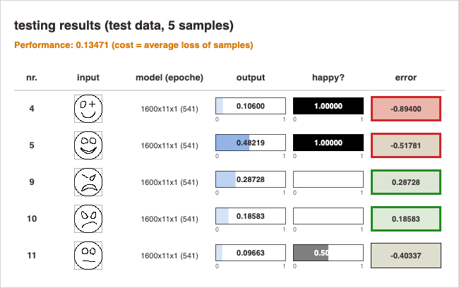
bBeurteile die Generalisierungsfähigkeit deines Netzes: Hat es die allgemeine Aufgabe gelernt? Mit welchen samples hat es Mühe?
Beispiel – dein Ergebnis darf abweichen
In diesem Beispiel generalisiert das Netz nur teilweise. Die test samples 4 und 5 werden als nicht glücklich beurteilt, obwohl ihr target 1 ist. Die samples 9 und 10 werden korrekt als nicht glücklich erkannt. Bei sample 11 (target 0.5) liegt der output mit etwa 0.10 deutlich unter dem neutralen target. Andere Trainingsdurchläufe können ein anderes Muster zeigen.
Darauf kommt es an – hake ab, was bei dir vorkommt:
Trainiere das Netz noch einmal neu und teste dann Trainingserfolg und Generalisierungsfähigkeit: Reset → train 500 epochs → test with train data und test with test data.
aFüge Screenshots beider Tests ein.
Beispiel – dein Ergebnis darf abweichen
test with train data – mögliches Ergebnis:
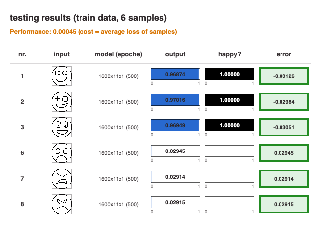
test with test data – mögliches Ergebnis:
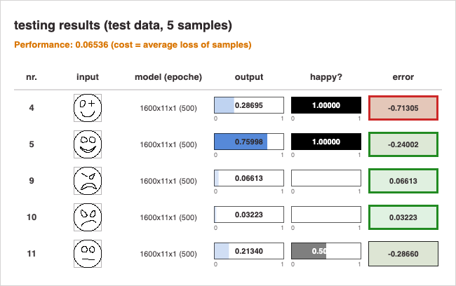
bBeurteile den Trainingserfolg dieser Version: Ist die prediction wieder nahe an den targets? Gilt das für alle training samples? Sind die Werte genau gleich wie letztes Mal? Warum (nicht)?
Beispiel – dein Ergebnis darf abweichen
Der Trainingserfolg ist in diesem Durchlauf sehr gut: Die outputs aller training samples liegen nahe bei ihren targets, und cost ist mit ungefähr 0.00045 sehr klein. Die Werte sind nicht exakt gleich wie beim ersten Training, weil neue Zufallsgewichte verwendet wurden und die Reihenfolge der samples innerhalb der Epochen variiert.
Darauf kommt es an – hake ab, was bei dir vorkommt:
cBeurteile die Generalisierungsfähigkeit dieser Version: Werden jetzt alle samples korrekt beurteilt? Gibt es mit denselben samples Probleme wie vorher? Warum (nicht)?
Beispiel – dein Ergebnis darf abweichen
Auch die Generalisierung ist diesmal besser (cost bei den test samples etwa 0.065 statt 0.135), aber nicht perfekt. Sample 4 wird weiterhin falsch beurteilt; sample 5 wird nun korrekt erkannt. Die samples 9 und 10 werden richtig beurteilt, und sample 11 liegt mit etwa 0.21 näher an seinem target 0.5 als beim ersten Training. Dass sich gerade sample 5 verbessert, zeigt: Verschiedene Trainingsdurchläufe können trotz gleicher Daten unterschiedliche Generalisierungsleistungen ergeben.
Darauf kommt es an – hake ab, was bei dir vorkommt:
Noch ein Vergleich: Lade das Smileys-Projekt neu – damit werden die weights wieder in den bereits vortrainierten Zustand versetzt. Führe wieder beide Tests durch.
aFüge Screenshots beider Tests ein.
Beispiel – dein Ergebnis darf abweichen
Trainingserfolg (test with train data):
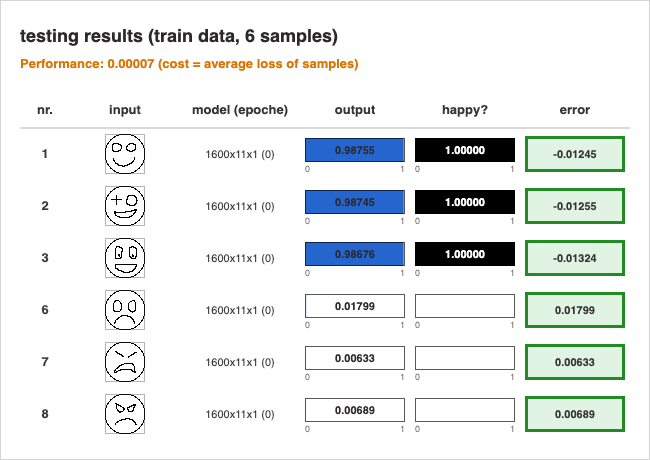
Generalisierung (test with test data):
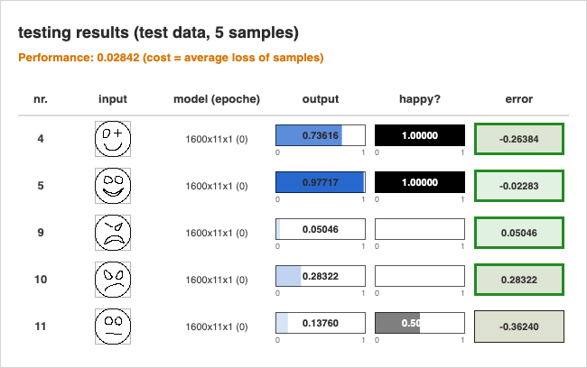
bBeurteile diesen Durchgang im Vergleich zu deinen selbst durchgeführten Trainings: Sind Trainingserfolg und Generalisierungsfähigkeit vergleichbar? Wo ergeben sich die grössten Unterschiede? Was könnte der Grund dafür sein?
Beispiel – dein Ergebnis darf abweichen
Im vorhandenen test-data-Screenshot erreicht das vortrainierte Netz mit cost ≈ 0.02842 die beste Generalisierungsleistung der drei gezeigten Hauptdurchläufe; die vier eindeutigen test samples liegen innerhalb der einfachen Fehlergrenze (output näher am target als am Gegenteil).
Die Unterschiede lassen sich sicher auf andere weights zurückführen; ohne Kenntnis des ursprünglichen Trainings sollte man aber nicht behaupten, welcher einzelne Trainingsfaktor dafür verantwortlich war.
Darauf kommt es an – hake ab, was bei dir vorkommt:
Das grosse Bild: Vergleiche die resultierende Generalisierungsfähigkeit der verschiedenen Trainingsdurchläufe (siehe deine Screenshots).
aKlappt das Generalisieren immer gleich gut? Sind immer dieselben test samples problematisch?
Beispiel – dein Ergebnis darf abweichen
Nein. In den gezeigten Durchläufen bleibt sample 4 bei den beiden selbst trainierten Netzen problematisch, sample 5 wird dagegen einmal falsch und einmal korrekt beurteilt. Die samples 9 und 10 sind in allen gezeigten Tests vergleichsweise stabil. Diese Beobachtung gilt nur für die vorliegenden Durchläufe und ist kein allgemeines Gesetz.
bWieso ergeben sich überhaupt Unterschiede, wo doch der Prozess immer gleich war?
Musterlösung
Die Startgewichte werden zufällig gewählt, und die Reihenfolge der training samples wird innerhalb der Epochen variiert. Ein nichtlineares Netz kann deshalb bei gleichen Einstellungen unterschiedliche Wege durch den Lernprozess nehmen und bei verschiedenen weight-Sätzen enden.
Dass auch die Reihenfolge einen Einfluss hat, zeigen beispielhaft die folgenden Ergebnisse, bei denen zwei Trainingsdurchläufe mit denselben Startgewichten gestartet wurden: Im ersten Durchlauf werden die samples 4 und 5 knapp richtig beurteilt (outputs ca. 0.57 und 0.56), im zweiten knapp falsch (ca. 0.45 und 0.49).
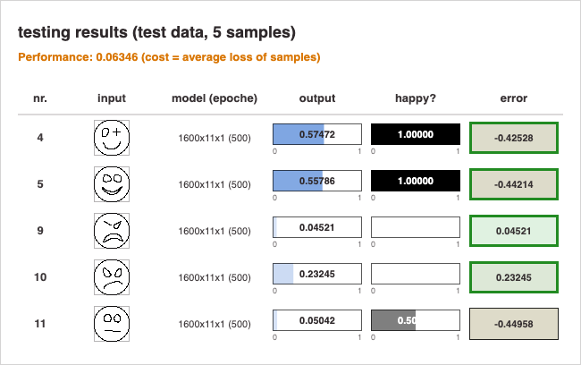
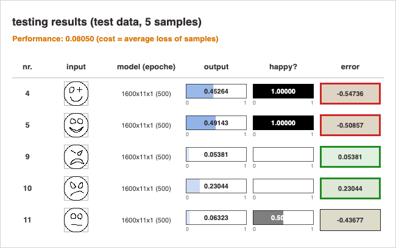
Darauf kommt es an – hake ab, was bei dir vorkommt:
cWas könnte man (am training) ändern, damit die test samples zuverlässiger erkannt werden?
Musterlösung
Am wichtigsten wären mehr und vielfältigere training samples, besonders Beispiele, die den bisher problematischen test samples ähneln. Die Klassen sollten ausgewogen vertreten sein; für neutrale Smileys wären eigene Beispiele mit passendem target nötig. Zusätzlich könnte man learning rate, Zahl der Epochen oder Netzwerkgrösse systematisch untersuchen und mehrere Trainingsdurchläufe vergleichen, möglicherweise gibt es effizientere Settings.
Darauf kommt es an – hake ab, was bei dir vorkommt:
dWieso können neuronale Netze überhaupt (mehr oder weniger gut) generalisieren? Genauer: Wieso können Netze auch unbekannte Beispiele beurteilen, und weshalb ist dieses Urteil zumindest oft korrekt?
Musterlösung
Alle samples werden mit denselben weights verarbeitet. Während des Trainings bilden sich in diesen weights statistische Muster ab, die für mehrere Beispiele gemeinsam nützlich sind. Ein unbekanntes sample mit ähnlichen Merkmalen benutzt dieselben weights, erzeugt deshalb ähnliche Aktivierungen und oft einen passenden output. Generalisierung gelingt vor allem dann, wenn die training samples die späteren Fälle gut repräsentieren; bei stark abweichenden Beispielen kann sie scheitern.
Darauf kommt es an – hake ab, was bei dir vorkommt:
e★Wieso ist sample 11 eigentlich kein fairer Test? Wie könnte man ihn fairer machen?
Musterlösung
Sample 11 hat target 0.5 und steht damit für einen neutralen oder unsicheren Fall. Unter den training samples gibt es jedoch nur targets 0 und 1; das Netz erhält also kein vergleichbares neutrales Beispiel. Fairer wäre der Test, wenn mehrere neutrale Smileys mit target 0.5 zu den training samples gehören würden. Alternativ müsste man die Aufgabe konsequent binär definieren und den neutralen Fall aus dem Test entfernen.
Exit Ticket
Lernkontrolle
Formuliere dein gegenwärtiges Verständnis, indem du die angefangenen Sätze beendest – du darfst auch mehrere Sätze schreiben, gerne unter Bezug auf die anderen in diesem Arbeitsblatt (und in den Erklärtexten unterhalb der App) verwendeten Fachbegriffe.
1Ein sample ist …
Musterlösung
Ein sample ist ein einzelnes Beispiel: Es besteht aus den input-Werten und dem zugehörigen target. In diesem Projekt bilden 1600 Pixelwerte die inputs, das target ist eine Zahl zwischen 1 (= glücklich) und 0 (= nicht glücklich).
Darauf kommt es an – hake ab, was bei dir vorkommt:
2Beim Testen (testing) …
Musterlösung
Beim testing werden samples per forward propagation verarbeitet, ohne die weights zu verändern. Output beziehungsweise prediction werden mit dem target verglichen, um die performance zu beurteilen. Test samples wurden zuvor nicht zum Training verwendet.
Darauf kommt es an – hake ab, was bei dir vorkommt:
3Beim training …
Musterlösung
Beim training werden die training samples wiederholt verarbeitet. Aus der Abweichung zwischen output und target wird berechnet, wie die weights angepasst werden sollen. Dadurch sollen loss (Fehler pro sample) und cost (durchschnittlicher Fehler über mehrere samples, z. B. pro epoch) kleiner werden.
Darauf kommt es an – hake ab, was bei dir vorkommt:
4Unter weights versteht man …
Musterlösung
Unter weights versteht man die Zahlen an den Verbindungen zwischen Neuronen. Sie bestimmen, wie stark und mit welchem Vorzeichen die Aktivierung eines Neurons die Neuronen der nächsten Schicht beeinflusst.
Innerhalb einer gegebenen Architektur bestimmen ausschliesslich die weights, wie ein Netz die inputs verarbeitet und zu welchem «Urteil» es jeweils kommt. Der Lernprozess verändert ausschliesslich die weights. Somit steckt das Gelernte (das «Wissen» bzw. «Können» eines Netzwerks) in den weights.
Darauf kommt es an – hake ab, was bei dir vorkommt:
5Generalisation bedeutet …
Musterlösung
Generalisation bedeutet, dass ein Netz nicht nur bei den training samples kleine Fehler erreicht, sondern auch unbekannte test samples zuverlässig beurteilt. Im besten Fall hat es also die eigentliche Aufgabe (hier: glückliche Smileys von unglücklichen zu unterscheiden) gelernt. Wirklich sicher sein kann man aber nie, denn dafür müsste man das Netz mit allen (theoretisch) möglichen Beispielen testen. Schon am Beispiel der Smileys zeigt sich: Das sind mindestens SEHR viele (wenn man Grauwerte zulässt, gibt es sogar unendlich viele potenzielle Smileys, d. h. Verteilungen von 1600 Zahlenwerten zwischen 0 und 1).
Darauf kommt es an – hake ab, was bei dir vorkommt:
Für Schnelle oder eine zweite Lektion
Optionale Vertiefung mit Kurzexperiment
Wenn ein neuronales Netz eine allgemeine Aufgabe lernen soll, dann braucht es dafür genügend (bezüglich Umfang und Qualität) Trainingsbeispiele. Versuche dir vorzustellen, wie viele verschiedene Verteilungen von 1600 Zahlen es gibt, die grob ein Smiley darstellen. Die allgemeine Aufgabe wäre erst dann vollkommen gelöst (= perfekte Generalisierung), wenn das Netz (oder dein Gehirn) all diese potenziellen Beispiele korrekt als entweder glücklich oder eben nicht beurteilen könnte. Es scheint offensichtlich viel verlangt, diese allgemeine Aufgabe auf der Basis von lediglich je 3 Beispielen für glückliche bzw. unglückliche Zahlenverteilungen zu erlernen. Eigentlich ist eher erstaunlich, dass es – zumindest im Ansatz – überhaupt funktioniert (siehe vorheriges Kapitel):
Wenn ein Netz mit den Trainingsdaten eine gute Leistung zeigt, aber ungenügend generalisiert, dann liegt das meist daran, dass die Trainingsbeispiele den ungleich grösseren Bereich aller möglichen Beispiele nur ungenügend abdecken. Wenn wir die Generalisierungsleistung des Netzes verbessern wollen, brauchen wir also mehr und/oder bessere training samples. Ausprobieren:
Füge im bisherigen Projekt weitere Trainingsdaten hinzu, also mehrere Beispiele für glückliche und nicht glückliche (ggf. auch neutrale) Smileys. Setze auch die target-Werte entsprechend und markiere die neuen Beispiele als training samples. Behalte die test samples bei.
Setze die weights zurück und trainiere dann das Netz neu (500 epochs).
Beurteile die performance nach dem training: Hat das Netz gelernt, auch die zusätzlichen samples korrekt zu beurteilen?
Teste dann, ob sich die Leistung mit den test samples verbessert hat:
- Falls nein: mehr Trainingsdaten einfügen, Beispiele wählen, die den test samples ähneln.
- Falls ja: Stabilität testen mit weiteren Trainingsdurchläufen, dazwischen weights zurücksetzen.
Belege dein bestes Generalisierungsergebnis mit entsprechenden Screenshots: